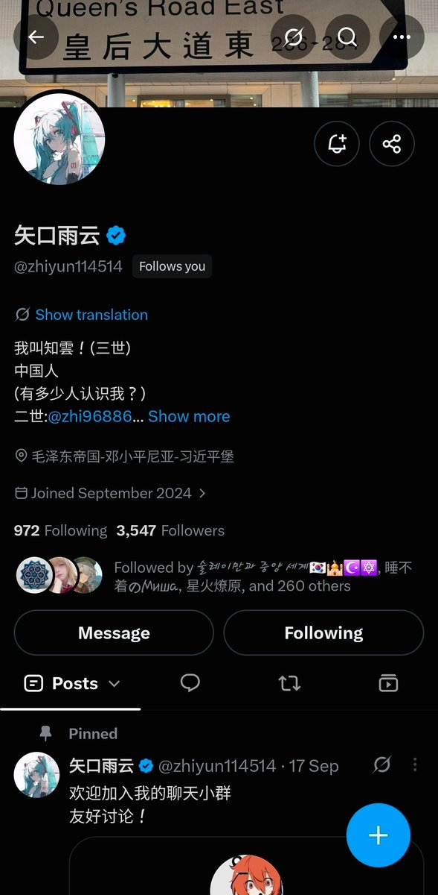

𝓶𝓸𝓻𝓽𝓲𝓼ですわ
@0Yowlry
@KawawaDiana @zhiyun114514 我看挺好，我给满分10分

弹蓝🫐然(📚🐻🤚🏻 Di Alan Chan)
@KawawaDiana
"归路终知云外去，晴湖想见镜中行" 王阳明
🎑推友们晚上好，希望各位有一个愉快的中秋节，今天我们的打分对像的争议更复杂，但话不多说，让我们评分吧~
#中推名人评分
第三十七期
知云
@zhiyun114514
(0-10分)
欢迎推友在评论区打分，并表示打分原因，请尽量避免仇恨以及极端言论,分数，几天后见👋🏻～ https://t.co/QCSEu8QNZo https://t.co/xe7CdCcW7n